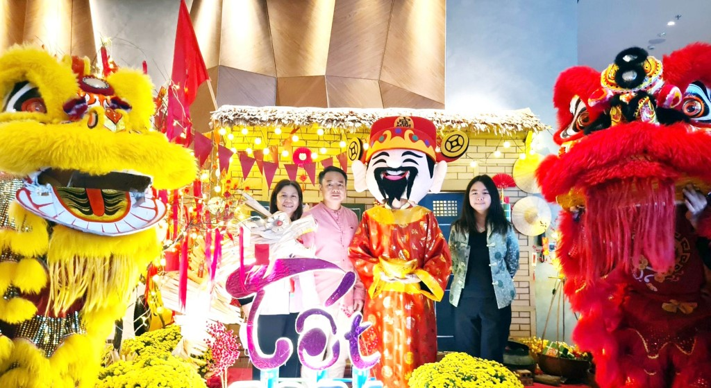

Thời điểm thích hợp để ghé thăm
Thời điểm lý tưởng nhất để ghé thăm phố cổ Hạ Long là vào mùa hè, từ tháng 4 đến tháng 6. Lúc này, thời tiết thường nắng đẹp, khô ráo, rất thích hợp cho các hoạt động ngoài trời như tham quan, chụp ảnh hay kết hợp nghỉ dưỡng tại các điểm du lịch lân cận như vịnh Hạ Long, bãi biển Bãi Cháy, hay công viên giải trí Sun World Hạ Long Park. Buổi tối, không gian phố cổ trở nên lung linh với ánh đèn lồng và các hoạt động văn hóa đặc sắc, là dịp tuyệt vời để du khách thưởng thức ẩm thực đường phố và khám phá nét đẹp truyền thống trong không gian hiện đại.
Ngoài ra, dịp cuối năm và Tết Nguyên đán (tháng 12 đến tháng 2) cũng là khoảng thời gian đáng để cân nhắc. Vào thời điểm này, phố cổ được trang hoàng lộng lẫy với đèn lồng đỏ, câu đối, cây đào, mang đậm không khí Tết truyền thống Việt Nam. Du khách có thể tham gia các lễ hội, xem trình diễn nghệ thuật dân gian, hoặc tham quan các gian hàng thủ công, áo dài và ẩm thực Tết. Tuy nhiên, đây cũng là thời điểm khá đông khách, nên nếu bạn không ngại sự náo nhiệt thì sẽ là một trải nghiệm rất đáng nhớ.

Dù chọn thời điểm nào, bạn cũng nên lưu ý tránh đi vào khoảng tháng 7 và 8 – khi miền Bắc thường có mưa bão, dễ ảnh hưởng đến lịch trình du lịch ngoài trời. Ngoài ra, nếu không thích đám đông, bạn có thể sắp xếp chuyến đi vào các ngày trong tuần để có được không gian yên tĩnh và thoải mái hơn khi khám phá phố cổ Hạ Long.